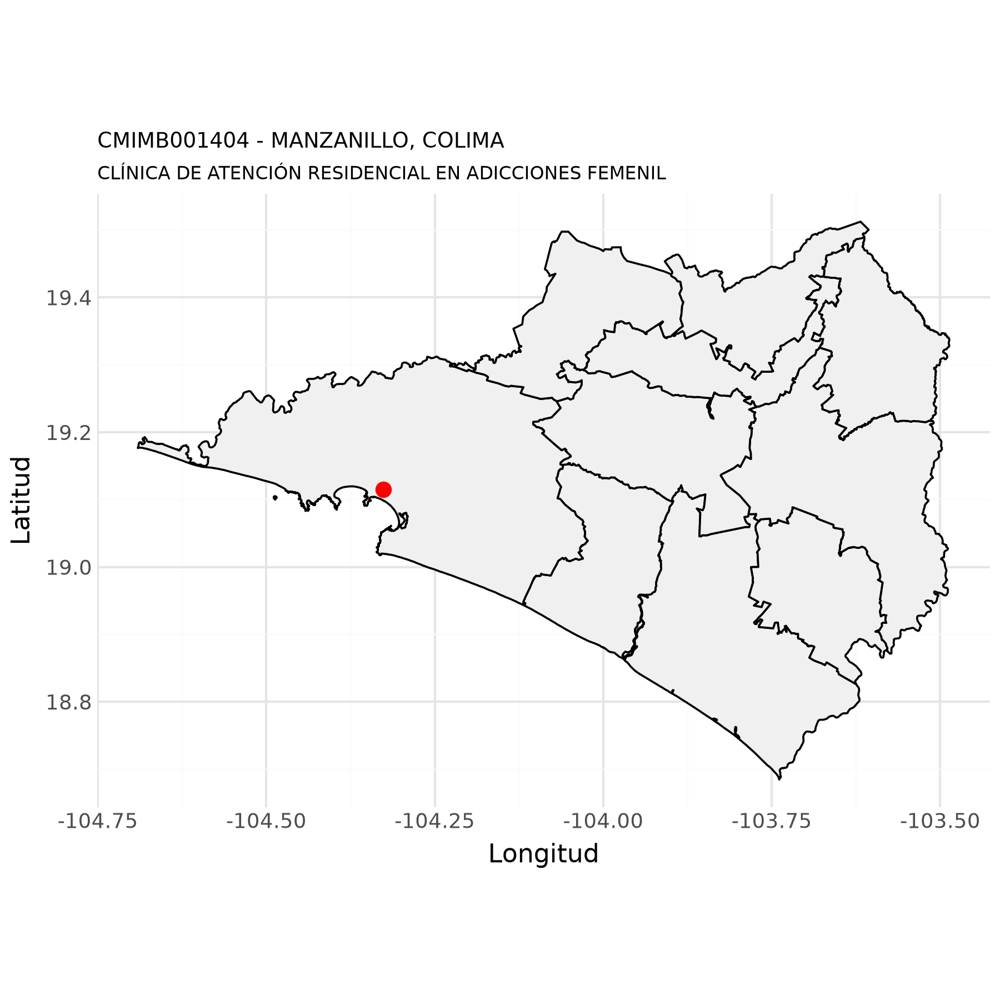

Datos de unidades de salud del IMSS Bienestar
CLÍNICA DE ATENCIÓN RESIDENCIAL EN ADICCIONES FEMENIL - CMIMB001404
5 de octubre de 2026
Luis
M. González

Datos generales
Con base en (Secretaría de Salud - DGIS, 23 de septiembre de 2026)
| Nombre de la unidad: | CLÍNICA DE ATENCIÓN RESIDENCIAL EN ADICCIONES FEMENIL |
| CLUES: | CMIMB001404 |
| Nivel de atención: | SEGUNDO NIVEL |
| Tipología: | CLÍNICA DE ESPECIALIDADES |
| Subtipología: | CLÍNICA DE ESPECIALIDADES DE ATENCIÓN A LAS ADICCIONES, DESINTOXICACIONES Y TOXICOLOGÍA |
| Tipo de establecimiento: | CONSULTA EXTERNA |
| Estrato: | URBANO |
| Estatus: | EN OPERACIÓN |
| Región: | NOROESTE |
| Entidad: | COLIMA |
| Municipio: | MANZANILLO |
| Localidad: | MANZANILLO |
| Coordenadas: | 19.115483, -104.3264496 |
| Domicilio: | AVENIDA ELIAS ZAMORA VERDUZCO No. SIN NÚMERO |
| FRACCIONAMIENTO VALLE SALAGUA | |
| MANZANILLO, COL | |
| CP 28869 | |
| Fecha de construcción: | 2008-10-19 |
| Fecha de inicio de operación: | 2009-04-19 |
| Propiedad del inmueble: | PROPIO |
| Último movimiento: | ALTA |
| Fecha del último movimiento: | 2024-07-18 |
Mapa

Recursos humanos
Fecha de última actualización en SINERHIAS:
2026-07-01 (Secretaría de Salud - DGIS, 14 de
agosto de 2026)
Totales
| Plazas | Totales | Ocupadas | Desocupadas |
|---|---|---|---|
| Médicos: | 2 | 2 | 0 |
| Enfermeras: | 5 | 5 | 0 |
| Otro personal profesional: | 5 | 5 | 0 |
| Otro personal: | 6 | 6 | 0 |
| Total recursos humanos: | 18 | 18 | 0 |
Médicos
| Plazas | Totales | Ocupadas | Desocupadas |
|---|---|---|---|
| Médicos generales: | 2 | 2 | 0 |
| Total médicos: | 2 | 2 | 0 |
Enfermeras
| Plazas | Totales | Ocupadas | Desocupadas |
|---|---|---|---|
| Enfermeras generales: | 2 | 2 | 0 |
| Enfermeras auxiliares: | 3 | 3 | 0 |
| Total enfermeras: | 5 | 5 | 0 |
Otro personal profesional
| Plazas | Totales | Ocupadas | Desocupadas |
|---|---|---|---|
| Trabajo social: | 2 | 2 | 0 |
| Psicólogos: | 3 | 3 | 0 |
| Total otro personal profesional: | 5 | 5 | 0 |
Otro personal
| Plazas | Totales | Ocupadas | Desocupadas |
|---|---|---|---|
| Personal administrativo: | 1 | 1 | 0 |
| Conservación y mantenimiento: | 1 | 1 | 0 |
| Intendencia: | 2 | 2 | 0 |
| Otro personal: | 2 | 2 | 0 |
| Total otro personal: | 6 | 6 | 0 |
Servicios médicos
Fecha de última actualización en SINERHIAS:
2026-07-01 (Secretaría de Salud - DGIS, 14 de
agosto de 2026)
Consulta externa básica
- Consulta externa básica: SI
| Consultorios | Totales | Habilitados | Deshabilitados |
|---|---|---|---|
| Medicina general: | 1 | 1 | 0 |
| Total consulta externa básica: | 1 | 1 | 0 |
Medicina preventiva y terapia de hidratación oral
- Servicio de medicina preventiva y terapia de hidratación oral: NO
- Salas de espera (familiares - pacientes): 1
- Capacidad en número de personas de las salas de espera: 10
- Laboratorio dental: NO
Consulta externa especialidades
- Consulta externa especialidades: NO
| Consultorios | Totales | Habilitados | Deshabilitados |
|---|---|---|---|
| Psicología: | 3 | 3 | 0 |
| Total consultorios de especialidad: | 3 | 3 | 0 |
Urgencias
- Área de urgencias: NO
- Área de curaciones: SI
| Áreas específicas | Totales | Habilitados | Deshabilitados |
|---|---|---|---|
| Camas en área de observación: | 3 | 3 | 0 |
Tocología y tococirugía
- Área de tocología y tococirugía: NO
Neonatologia y cuneros
- Área de neonatología y cuneros: NO
- Banco de leche: NO
Hospitalización
- Área de hospitalización: NO
- Área de trabajo de enfermería: NO
- Salas de espera (familiares - pacientes) : 0
- Capacidad en número de personas de las salas de espera: 0
Unidad quirúrgica
- Área de unidad quirúrgica: NO
Recuperación postquirúrgica
- Área de recuperación postquirúrgica: NO
Unidad de cuidados intensivos
- Área de unidad de cuidados intensivos: NO
- Área de unidad de cuidados intensivos neonatales: NO
Unidad de cuidados intermedios
- Área de unidad de cuidados intermedios: NO
Cuidados coronarios
- Área de cuidados coronarios: NO
Terapias
- Área de inhaloterapia: NO
- Área de medicina física y rehabilitación: NO
- Área de hidroterapia: NO
- Área de electroterapia: NO
- Área de mecanoterapia: NO
- Área de termoterapia: NO
Unidad de cirugía ambulatoria
- Área de unidad de cirugía ambulatoria: NO
- Área de recuperación de cirugía ambulatoria: NO
Hemodiálisis
- Área de hemodiálisis: NO
Centrales de enfermería
- Centrales de enfermería: NO
Planta de tratamiento de agua
- Planta de tratamiento de agua: NO
Unidad de terapia oncológica
- Unidad de terapia oncológica: NO
- Área de radioterapia externa: NO
- Área de braquiterapia_alta tasa: NO
- Área de braquiterapia baja tasa: NO
- Área de quimioterapia: NO
- Cuarto caliente: NO
- Bunker: NO
- Cuarto de revelado: NO
- Área de preparación de medicamentos: NO
- Área de trabajo de enfermería: SI
- Área de guarda de medicamentos: SI
Unidad de quemados
- Área de unidad de quemados: NO
Unidad transplante de médula ósea
- Área de unidad de transplante de médula ósea: NO
Otros servicios médicos
- Área de hematología: NO
- Sistema de flujo laminar: NO
- Área de preparación de alimentos: NO
- Sistema de intercomunicación: NO
- Área de clínica de medicina hiperbárica,: NO
- Área de imagenología,: NO
- Área de urodinámia: NO
- Área de hemodinámia: NO
- Área de medicina nuclear: NO
- Área de laboratorio clínico: NO
- Área de laboratorio de microbiología: NO
- Área de laboratorio de radioinmunoensayo: NO
- Área de anatomía patológica: NO
Servicios de apoyo
Fecha de última actualización en SINERHIAS:
2026-07-01 (Secretaría de Salud - DGIS, 14 de
agosto de 2026)
Ambulancias
- Ambulancias: NO
Área de banco de sangre
- Área de banco de sangre: NO
- Capacidad de almacenamiento: 0
- Laboratorio de banco sangre: NO
Otros servicios de apoyo
- Área CEyE: NO
- Área centro de mezclas: NO
- Número de centros de mezclas: 0
- Área de farmacia: SI
- Área de ingeniería biomédica: NO
Servicios generales
Fecha de última actualización en SINERHIAS:
2026-07-01 (Secretaría de Salud - DGIS, 14 de
agosto de 2026)
- Almacén general: SI
- Casa de máquinas: NO
- Calderas: NO
- Subestación: NO
- Planta de emergencia: NO
- Talleres de reparación: NO
- Cocina: SI
- Comedor: SI
- Central de gases medicinales: NO
- Compresoras: NO
- Aire acondicionado: SI
- Servicios de intendencia: SI
- Roperia: SI
- Lavandería: NO
- Servicio de mensajería: NO
- Servicio de vigilancia: SI
- Servicio de fotocopiado: NO
- Tratamiento de residuos sólidos: NO
- Tratamiento de aguas residuales: NO
- Almacénn temporal de residuos peigrosos, biólogicos o infecciosos: NO
- Almacén de productos CRETI:1 NO
- Incinerador: NO
- Sistema de desechos líquidos: NO
- Almacén de medicamentos: NO
- Cámara fría para resguardo de insumos para la salud: NO
- Cámaras frías fabricadas con paneles: 0
- Cámaras frias de concreto: 0
Infraestructura
Fecha de última actualización en SINERHIAS:
2026-07-01 (Secretaría de Salud - DGIS, 14 de
agosto de 2026)
- Agua
- Servicio de agua potable: SI
- Red municipal de abastecimiento de agua: SI
- Pozo de agua: NO
- Almacenamiento de agua por cisterna: SI
- Otra fuente de abastecimiento de agua: NO
- Energía eléctrica
- Servicio de energía eléctrica: SI
- Instalación de energía eléctrica: SI
- Sistema de paneles solares: NO
- Tierra física: SI
- Pararayos: NO
- Drenaje
- Sistema de drenaje: SI
- Fosa séptica: NO
- Gas
- Servicio de gas (tanque estacionario, natural, otro): SI
- Baños
- Baños públicos (inodoros y mingitorios): 2
- Baños para el personal (inodoros y mingitorio): 8
- Baños para pacientes (inodoros y mingitorio): 12
- Baños para discapacitados (inodoro): 2
- Radio CB
- Radio de banda civil: NO
- Telesalud
- Área específica de telesalud: NO
- Estación para telemedicina-telesalud: NO
- Ancho de banda disponible para servicio de telesalud: NO TIENE
- Equipo de videoconferencia: NO
- Equipo de cómputo específico para telesalud: NO
- Software para telemedicna-telesalud: NO
- Expediente clínico electrónico
- Expediente clínico electrónico: SI
- Nombre del expediente clínico electrónico: SAECCOL se acaba de instalar y se esta en tramite para su funcionamiento)
- Infraestructura
- Metros cuadrados de terreno: 8135
- Metros cuadrados de construcción: 1400
- Metros cuadrados de superficie exterior: 6735
- Metros cuadrados de superficie jardinada: 0
- Número de edificios que conforman el establecimiento: 1
- Número de Niveles que tiene el establecimiento: 2
- Computadoras
- Computadoras funcionales (laptops y PC): 11
- Consultorios con computadora funcional: 5
- Computadoras funcionales en la dirección: 4
- Computadoras funcionales en la farmacia: 1
- Computadoras funcionales en el área de estadística: 0
- Computadoras funcionales en el área de informática: 1
- Internet
- Tipo de conexión a internet: INTERNET DE CABLE (FIBRA OPTICA , CABLE COAXIAL)
- Ancho de banda: 51 A 100 MB
- Número de usuarios por conexión de internet: 11
- Internet pagado por: SECRETARIA DE SALUD ESTATAL
- Internet en la dirección: SI
- Internet en la farmacia: SI
- Internet en el área de estadística: NO
- Internet en el área de informática: SI
- Número de consultorios con internet: 5
Equipamiento médico
Con base en SINERHIAS: (Secretaría de Salud - DGIS, 14 de agosto de 2026)
Equipamiento médico (concentrado)
| Equipo | Funcionando | Fuera de servicio | Total |
|---|---|---|---|
| BASCULA CON ESTADIMETRO | 1 | 0 | 1 |
| CARRO ROJO CON DESFIBRILADOR MONITOR Y EQUIPO DE REANIMACION | 0 | 1 | 1 |
| ESFIGMOMANOMETRO ANEROIDE | 4 | 11 | 15 |
| ESFIGMOMANOMETRO MERCURIAL | 0 | 1 | 1 |
| ESTETOSCOPIO BIAURICULAR | 3 | 0 | 3 |
| ESTUCHE DE DIAGNOSTICO COMPLETO (OFTALMOSCOPIO Y OTOSCOPIO) | 2 | 0 | 2 |
| LAMPARA DE HAZ DIRECCIONABLE | 1 | 0 | 1 |
| MESA DE EXPLORACION GENERAL | 4 | 0 | 4 |
| NEGATOSCOPIO | 2 | 0 | 2 |
| REFRIGERADOR DE FARMACIA | 1 | 0 | 1 |
Indicadores
El cálculo de los indicadores estratégicos para evaluar el componente de atención en unidades de salud, fueron propuestos por (Servicios de Salud IMSS Bienestar, 2025).
Con las bases de datos compartidas por
DGIS, podemos calcular únicamente los
indicadores del 75 al 81 y el 84
El cálculo de los indicadores fue realizado para el siguiente rango de fechas:
Fecha inicial: 2026-01-01
Fecha final: 2026-09-30
Indicador 75. Razón de personal médico por cama
ATN-07
Fuente de datos:
- Catálogo de CLUES, (Secretaría de Salud - DGIS, 23 de septiembre de 2026)
- SINERHIAS, (Secretaría de Salud - DGIS, 14 de agosto de 2026)
Descripción
Estima el número de camas disponibles por médicos activos.
Proporciona una visión sobre la disponibilidad de médicos en relación al número de camas censables, en unidades hospitalarias del IMSS Bienestar.
Cálculo
\[ Indicador_{75} = \frac{m_{e}}{c_{c}} \]
Donde:
\(m_{e} =\) Total de médicos especialistas registrados en unidades del IMB
\(c_{c}=\) Total de camas censables
Calificaciones
| Calificación | Rango |
|---|---|
| Óptimo | 0.6 - 0.8 |
| Esperado | 0.4 - 0.59 |
| Regular | 0.2 - 0.39 |
| Crítico | < 0.2 |
Resultado
| clues | Médicos especialistas | Camas censables | Indicador 75 | Calificación |
|---|---|---|---|---|
| CMIMB001404 | 0 | 0 |
Indicador 81. Promedio diarios de eventos quirúrgicos por quirófano
ATN-13
Fuente de datos:
- Catálogo de CLUES, (Secretaría de Salud - DGIS, 23 de septiembre de 2026)
- Egresos hospitalarios, (Secretaría de Salud - DGIS, 04 de octubre de 2026)
- SINERHIAS, (Secretaría de Salud - DGIS, 14 de agosto de 2026)
Descripción
Expresa el número promedio de cirugías realizadas por quirófanos habilitados durante un mes en hospitales del IMSS Bienestar.
Mide el grado de utilización de quirófanos en cirugías.
Cálculo
\[ Indicador_{81} = \frac{i_{q}}{s_{o} \cdot \Delta t} \]
Donde:
\(i_{q} =\) Número de cirugías realizadas por mes calendario
\(s_{o} =\) Número de quirófanos habilitados en unidades del IMB
\(\Delta t =\) Número de días del periodo de análisis
Calificaciones
| Calificación | Rango |
|---|---|
| Óptimo | 2.0 - 3.5 |
| Esperado | 1.0 - 1.9 o 3.6 - 4.0 |
| Regular | 0.5 - 0.9 o > 4.0 |
| Crítico | < 0.5 |
Resultado
| clues | Cirugías | Quirófanos | Indicador 81 | Calificación |
|---|---|---|---|---|
| CMIMB001404 | 0 | 0 |
Apéndice
Descargas
Descargar CMIMB001404.pdf
Referencias
CRETI, acrónimo de Corrosivo, Reactivo, Explosivo, Tóxico, e Inflamable↩︎